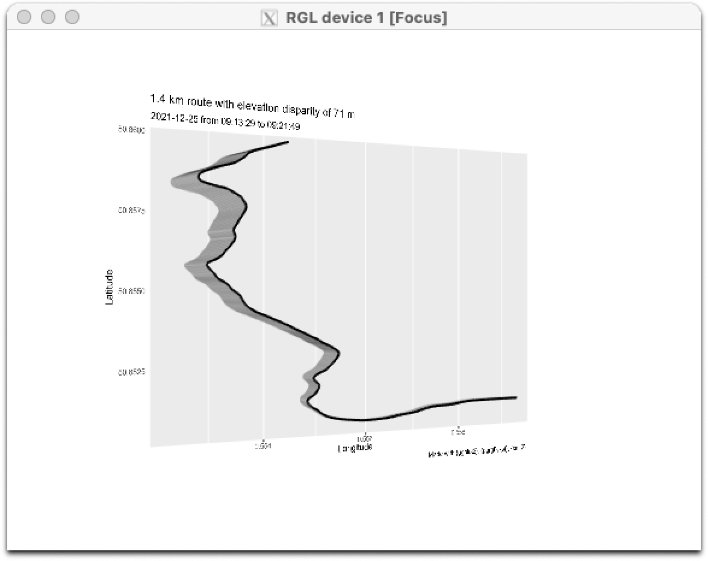
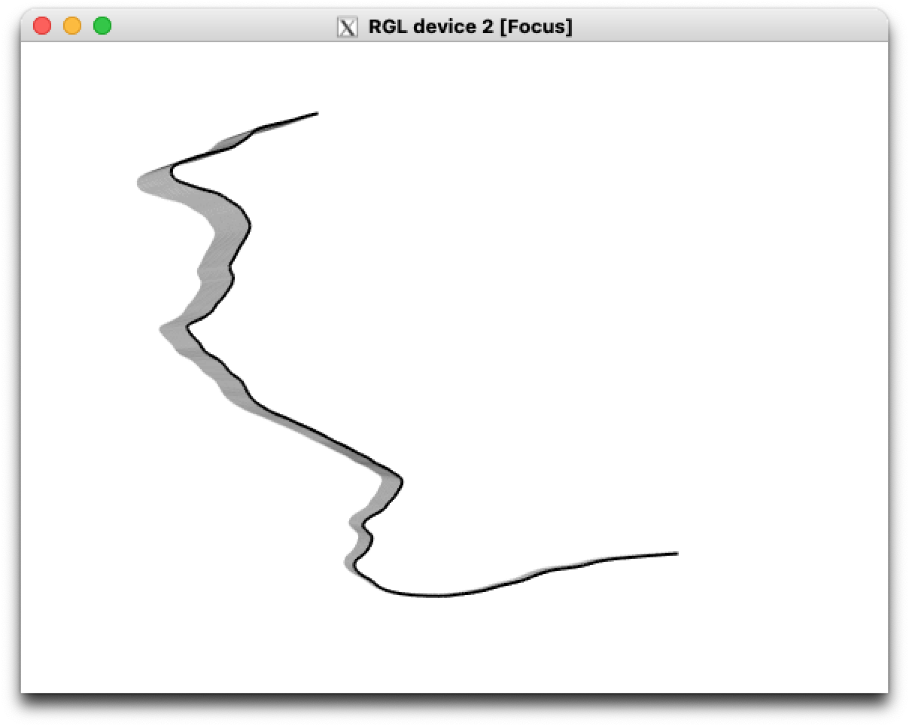
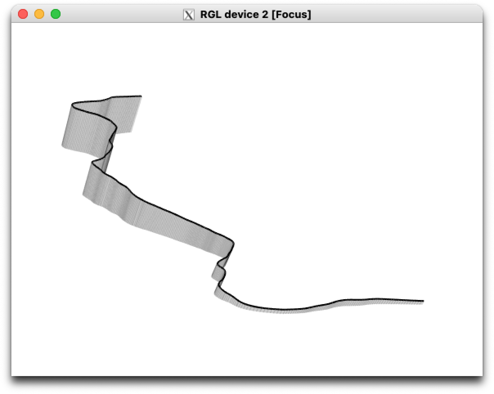

An in-development, opinionated R package to create interactive 3D plots of workout routes.
Takes a .gpx file—downloaded from the Apple Health app, for example—and extracts the time, coordinates and elevation into an sf-class object. You can then plot this as a 3D interactive object thanks to {ggrgl}.
Read more in the accompanying blogpost or visit the documentation website.
Install
The package is available from GitHub only.
install.packages("remotes") # if not installed already
remotes::install_github("matt-dray/gpx3d")
library(gpx3d)There are a number of dependencies, including many that are not available on CRAN; see the README for {ggrgl} for details. You must also install XQuartz, if you haven’t already.
Demo
The package contains an example GPX file with an edited segment of a route I took as part of a 10 km run on Christmas morning 2021. It can be read in with extract_gpx3d(), which outputs an sf-class data.frame with geospatial information. (Alternatively, you can output a simpler data.frame object with the extract_gpx3d() argument sf_out = FALSE.)
x <- system.file("extdata", "segment.gpx", package = "gpx3d")
y <- extract_gpx3d(x)
y# Simple feature collection with 501 features and 5 fields
# Geometry type: POINT
# Dimension: XY
# Bounding box: xmin: 0.552347 ymin: 50.85061 xmax: 0.559273 ymax: 50.85968
# Geodetic CRS: WGS 84
# First 10 features:
# time ele lon lat geometry distance
# 1 2021-12-25 09:13:29 8.406136 0.559273 50.85109 POINT (0.559273 50.85109) 0.000000 [m]
# 2 2021-12-25 09:13:30 8.498508 0.559209 50.85109 POINT (0.559209 50.85109) 4.494285 [m]
# 3 2021-12-25 09:13:31 8.599027 0.559144 50.85109 POINT (0.559144 50.85109) 4.564465 [m]
# 4 2021-12-25 09:13:32 8.721706 0.559079 50.85109 POINT (0.559079 50.85109) 4.564465 [m]
# 5 2021-12-25 09:13:34 8.858613 0.559015 50.85109 POINT (0.559015 50.85109) 4.492909 [m]
# 6 2021-12-25 09:13:35 9.007253 0.558952 50.85109 POINT (0.558952 50.85109) 4.422707 [m]
# 7 2021-12-25 09:13:36 9.154713 0.558889 50.85109 POINT (0.558889 50.85109) 4.424104 [m]
# 8 2021-12-25 09:13:37 9.315786 0.558825 50.85109 POINT (0.558825 50.85109) 4.494284 [m]
# 9 2021-12-25 09:13:38 9.493576 0.558762 50.85109 POINT (0.558762 50.85109) 4.422707 [m]
# 10 2021-12-25 09:13:39 9.686247 0.558699 50.85109 POINT (0.558699 50.85109) 4.424104 [m]Note that the result of extract_gpx3d(x) is also available in the package as the demo dataset gpx_segment.
Now you can use plot_gpx3d() to plot the output from extract_gpx3d(). This opens in an external RGL device.
plot_gpx3d(y)The plots can’t be embedded here, so here’s a low-quality screenshot of the device:

The title gives the route length (1.4 km) and the elevation difference from lowest to highest points (71 m); the subtitle gives the date (2021-12-25) and the start (09:13:29) to end (09:21:49) times. X and Y are longitude and latiutude.
You can use route_only = TRUE to remove all of the chart elements except for the route itself:
plot_gpx3d(y, route_only = TRUE)
The plot_gpx3d() output is interactive so you can click and drag it, and scroll to zoom. Here’s a more exaggerated view of the elevation:

This highlights how useful the third dimension is, given the ascent from sea-level to the top of a hill in this example.
Code of Conduct
Please note that the {gpx3d} project is released with a Contributor Code of Conduct. By contributing to this project, you agree to abide by its terms.